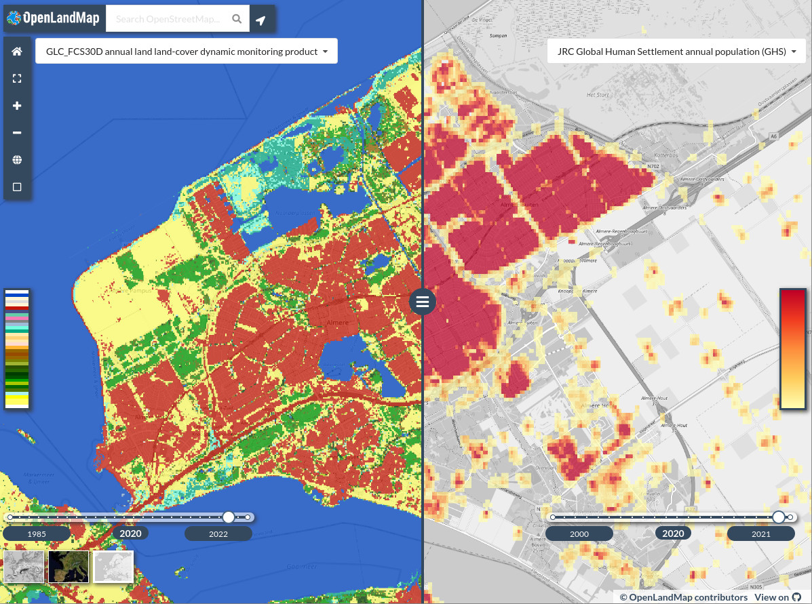

About
OpenLandMap are Open Land Data services providing access to spatial layers covering global land mass (at spatial resolutions of 1-km, 250-m, 100-m, 30-m or finer) hosted by the OpenGeoHub foundation, GILAB.rs and collaborators. It aims at becoming an OpenStreetMap-type system for land data. Access to spatial layers is possible via interactive visualizations and/or Open Source software solutions. Read more about this project here.

The OpenLandMap layers, if not specified otherwise, are licensed under the Creative Commons Attribution-ShareAlike 4.0 International license (CC BY-SA) and/or the Open Data Commons Open Database License (ODbL). This implies that anyone can use, or build upon, the OpenLandMap data without restrictions. See the Copyright and License page for more details.
Users can access OpenLandMap data via the five main channels:
- OpenLandMap App at https://openlandmap.org,
- OpenLandMap training points at https://github.com/openlandmap/compiled-ess-point-data-sets,
- OpenGeoHub STAC installation at https://stac.opengeohub.org,
- Zenodo.org to access a (version-controlled) back-up copy of data via a DOI,
Data portal https://openlandmap.org is the landing page (running on Geoserver + OpenLayers) where users can browse maps, query values by location, and find out about most recent news and activities. STAC at https://stac.opengeohub.org is a generic layer repository for accessing layers installed and maintained by OpenGeoHub. It allow users i.e. producers of layers to edit and update metadata and descriptions, create map views, learn how to use WCS, WMS or similar. A copy of the raw data can be obtained via zenodo.org or similar public data repositories.
The training data repository contains import and processing steps run to clean up and standardize global compilations of training points, most importantly the land cover, vegetation, meteo, soil and similar observations.
Layers and themes of interest
OpenLandMap.org provides access to global environmental layers focused on land surface. We are aiming at serving Analysis-Ready, Cloud-Optimized (ARCO) data which passes four simple C checks (4C): (1) completeness (meaning: data is available for all or at least 99% of pixels of interest), (2) consistency (meaning: consistent file names, variable names and relationships, and everything is documented via metadata), (3) currency (in this context: the user is using the most up-to-date version of the data), (4) correctness (in this context: making sure that the served data is the most correct / highest possible quality version). In other words, ARCO version of the data should be something that is highest quality, fully documented and optimized for web-services / advanced analysis.
Thus, the following five primary requirements need to be satisfied before a layer can be considered for inclusion:
- Global coverage with at least 98% of the land mask represented in the layer (as not-NA values).
- An Open Data license.
- Metadata is supplied following the format specified below (all columns are filled-in and up-to-date).
- Sufficient technical documentation is supplied — usually as a scientific paper or a report.
- A GDAL/proj4-compatible data format and projection system is used that allows for inclusion into Geoserver or similar.
All layers are organized around the following themes (based on the UN-GGIM The Global Fundamental Geospatial Data Themes):
- Buildings and Settlements,
- Elevation and Depth,
- Geology and Soils,
- Land Cover and Land Use,
- Population Distribution,
- Water,
- Physical Infrastructure,
- Climate (added entry),
- Biodiversity and Nature Conservation (added entry),
Note some layers maybe match two or more themes and are difficult to classify using a simple definition, hence we might mention them at multiple places / within multiple themes.
Radeloff et al. (2024) (the Landsat science team) have proposed 13 essential and many more desirable/ aspirational products using medium resolution imagery referred to as “Medium-resolution satellite image-based products that meet the identified information needs for sustainable management, societal benefits, and global change challenges”. The desirable products include: maps of crop types, irrigated fields, land abandonment, forest loss agents, LAI/FAPAR, green vegetation cover fraction, emissivity, ice sheet velocity, surface water quality and evaporative stress. The aspirational land monitoring products include: forest types, and tree species, urban structure, forest recovery, crop yields, forest biomass, habitat heterogeneity and winter habitat indices, net radiation, snow and ice sheet surface melt, ice sheet and glacier melt ponds, sea ice motion and evaporation and transpiration. This list is largely a basis for OpenLandMap activities for the years to come.
Accessing data
OpenLandMap data can be best accessed using the OpenLandMap S3 file service. This service is based on Cloud-Optimized GeoTIFFs and is probably also the best solution for doing spatial queries and spatial analysis.
To connect and use data seamlessly in your code, we recommend using STAC tools e.g. RStac to access the OpenLanMap catalog then program analysis by using the most up-to-date version of the data. You can use the https://s3.eu-central-1.wasabisys.com/stac/openlandmap/catalog.json and the collection_id (example: fapar_essd.lstm) to access description of data and URLs of filenames on S3.
Accessing data from Zenodo
To download whole layers from zenodo you can use the R packages jsonlite and RCurl:
library(jsonlite)
library(RCurl)
library(rgdal)You first need to authenticate yourself by using a Zenodo API TOKEN (see: how to obtain API TOKEN):
TOKEN = scan("~/TOKEN_ACCESS", what="character")To download the MODIS LST images at 1 km you can use the bucket ID dep.id = "1435938" which gives:
dep.id = "1435938"
x = fromJSON(system(paste0('curl -H \"Accept: application/json\" -H \"Authorization: Bearer ',
TOKEN, '\" \"https://zenodo.org/api/deposit/depositions/', dep.id, '\"'), intern=TRUE))
% Total % Received % Xferd Average Speed Time Time Time Current
Dload Upload Total Spent Left Speed
100 58704 100 58704 0 0 80219 0 --:--:-- --:--:-- --:--:-- 80196 % Total % Received % Xferd Average Speed Time Time Time Current
Dload Upload Total Spent Left Speed
100 58704 100 58704 0 0 80219 0 --:--:-- --:--:-- --:--:-- 80196
> str(x, max.level = 1)
List of 15
$ created : chr "2018-09-26T18:37:50.432468+00:00"
$ modified : chr "2022-04-14T07:11:06.399928+00:00"
$ id : int 1435938
$ conceptrecid: chr "1420114"
$ doi : chr "10.5281/zenodo.1435938"
$ conceptdoi : chr "10.5281/zenodo.1420114"
$ doi_url : chr "https://doi.org/10.5281/zenodo.1435938"
$ metadata :List of 15
$ title : chr "Long-term MODIS LST day-time and night-time temperatures, sd and differences at 1 km based on the 2000–2017 time series"
$ links :List of 21
$ record_id : int 1435938
$ owner : int 43652
$ files :'data.frame': 102 obs. of 5 variables:
$ state : chr "done"
$ submitted : logi TRUEThis shows that there are total of 102 files in this folder. To download all temperatures for August, we would hence use:
> sel.tif = x$files$links$download[grep("aug", x$files$links$download)]which gives a total of 9 files:
> sel.tif
[1] "https://zenodo.org/api/records/1435938/draft/files/clm_lst_mod11a2.aug.day_u.975_1km_s0..0cm_2000..2017_v1.0.tif/content"
[2] "https://zenodo.org/api/records/1435938/draft/files/clm_lst_mod11a2.aug.day_l.025_1km_s0..0cm_2000..2017_v1.0.tif/content"
[3] "https://zenodo.org/api/records/1435938/draft/files/clm_lst_mod11a2.aug.day_m_1km_s0..0cm_2000..2017_v1.0.tif/content"
[4] "https://zenodo.org/api/records/1435938/draft/files/clm_lst_mod11a2.aug.daynight_m_1km_s0..0cm_2000..2017_v1.0.tif/content"
[5] "https://zenodo.org/api/records/1435938/draft/files/clm_lst_mod11a2.aug.day_sd_1km.png/content"
[6] "https://zenodo.org/api/records/1435938/draft/files/clm_lst_mod11a2.aug.day_sd_1km_s0..0cm_2000..2017_v1.0.tif/content"
[7] "https://zenodo.org/api/records/1435938/draft/files/clm_lst_mod11a2.aug.night_l.025_1km_s0..0cm_2000..2017_v1.0.tif/content"
[8] "https://zenodo.org/api/records/1435938/draft/files/clm_lst_mod11a2.aug.night_u.975_1km_s0..0cm_2000..2017_v1.0.tif/content"
[9] "https://zenodo.org/api/records/1435938/draft/files/clm_lst_mod11a2.aug.night_m_1km_s0..0cm_2000..2017_v1.0.tif/content" We can test accessing the file by using:
tif = stringi::stri_replace_all_fixed(sel.tif[1], c("api/", "draft/", "/content"), "", vectorize_all=FALSE)
> system(paste0("gdalinfo /vsicurl/", tif))
Driver: GTiff/GeoTIFF
Files: /vsicurl/https://zenodo.org/records/1435938/files/clm_lst_mod11a2.aug.day_u.975_1km_s0..0cm_2000..2017_v1.0.tif
Size is 43200, 17924
Coordinate System is:
GEOGCRS["WGS 84",
DATUM["World Geodetic System 1984",
ELLIPSOID["WGS 84",6378137,298.257223563,
LENGTHUNIT["metre",1]]],
PRIMEM["Greenwich",0,
ANGLEUNIT["degree",0.0174532925199433]],
CS[ellipsoidal,2],
AXIS["geodetic latitude (Lat)",north,
ORDER[1],
ANGLEUNIT["degree",0.0174532925199433]],
AXIS["geodetic longitude (Lon)",east,
ORDER[2],
ANGLEUNIT["degree",0.0174532925199433]],
ID["EPSG",4326]]
Data axis to CRS axis mapping: 2,1
Origin = (-180.000000000000000,87.370000000000005)
Pixel Size = (0.008333333333333,-0.008333333333333)
Metadata:
AREA_OR_POINT=Area
Image Structure Metadata:
COMPRESSION=DEFLATE
INTERLEAVE=BAND
Corner Coordinates:
Upper Left (-180.0000000, 87.3700000) (180d 0' 0.00"W, 87d22'12.00"N)
Lower Left (-180.0000000, -61.9966667) (180d 0' 0.00"W, 61d59'48.00"S)
Upper Right ( 180.0000000, 87.3700000) (180d 0' 0.00"E, 87d22'12.00"N)
Lower Right ( 180.0000000, -61.9966667) (180d 0' 0.00"E, 61d59'48.00"S)
Center ( -0.0000000, 12.6866667) ( 0d 0' 0.00"W, 12d41'12.00"N)
Band 1 Block=43200x1 Type=Int16, ColorInterp=Gray
NoData Value=-32767
Overviews: 21600x8962, 10800x4481, 5400x2241, 2700x1121, 1350x561, 675x281, 338x141These files can be further downloaded using download.file(tif, basename(tif)) function or similar. There is also an R package for Zenodo zen4R that makes downloading files even easier. In python you can also the library zen that is especially useful for uploading very large data sets to Zenodo.
Accessing data from Google Earth Engine
Google Earth Engine users can access a snapshot of OpenLandMap.org layers using the following address:
- https://code.earthengine.google.com/?asset=users/opengeohub/openlandmap
Description of layer names and units used can be find here. Note that sync between the layers on the OpenLandMap.org and Google Earth Engine is done only once a year, hence, if you wish to use the most up-to-date layers at any moment, downloading maps from either Zenodo or via the Wasabi service is recommended.
To access OpenLandMap layers you can also refer to the public data sets at:
- https://developers.google.com/earth-engine/datasets/tags/openlandmap
The file naming convention
The OpenLandMap file-naming convention works with 10 fields that basically define the most important properties of the data (this way users can search files, prepare data analysis etc, without even needing to access or open files. The 10 fields include:
- Generic variable name (needs to be unique):
lclu - Variable procedure combination i.e. method standard (standard abbreviation):
esa.cci - Position in the probability distribution / variable type:
c - Spatial support (usually horizontal block) in m or km:
250m - Depth reference or depth interval e.g. below (“b”), above (“a”) ground or at surface (“s”) b{depth}{metric length} for certain depth. e.g. b30cm. For the interval we would like to go for b{depth}t{depth}{metric length}:
b30t60cm - Time reference begin time (YYYYMMDD):
20210101 - Time reference end time:
20211231 - Bounding box (2 letters max):
go - EPSG code:
epsg.4326 - Version code i.e. creation date:
v20221015
An example of a file-name based on the description above:
lclu_esacci.lc.l4_c_250m_s_20210101_20211231_go_epsg.4326_v20221015.tifThe following variable types are currently supported:
m= mean value;q.10= 10% probability quantile (one side probability);d= median value; equivalent toq.50;c= class or factor / requires a domain with codes / levels;cd= change class (special cross-domain 2D matrix);p= probability 0–100%;sse= Shannon Scaled Entropy index;l.159= lower 68% probability threshold (quantile);u.841= upper 68% probability threshold (quantile), for one-sided probability use “q”,pc= percent cover of the pixel 0–100%;sd= standard deviation or prediction error; for multiple standard deviation use e.g. “sd.2”md= model deviation (in the case of ensemble predictions);si= confidence interval range for the prediction of the mean value;td= cumulative difference (usually based on time-series of values);
Note that this file naming convention has the following properties:
- Large quantities of files can be easily sorted and searched (one line queries in Bash).
- File-naming patterns can be used to seamlessly build virtual mosaics and composites.
- Key spatiotemporal properties of the data are available in the file name e.g. variable type, O&M method, spatial resolution, bounding box, projection system, temporal references. Users can program analysis without opening or testing files.
- Versioning system is ubiquitous.
- All file-names are unique.
Geonetwork and STAC will be further used to link the unique file names to: (1) WPs, deliverables, themes / keywords, (2) DOI’s, (3) project homepages, (4) contact pages for support and feedback. For keywords we recommend using the INSPIRE keywords. To confirm that metadata is complete and consistent, we recommend using the INSPIRE metadata validator and/or https://data.europa.eu/en validator.
Some simple additional rules for generating the file name include:
- Codes and abbreviations should be human-readable as much as possible (hence short, but not too short!);
- Use only English-US (en-us) language e.g. for months use “jan”, “feb” etc;
- Consistently use UNICODE standard: no non-ASCII characters;
- Limit the total file name size in characters to: 256;
- For time reference do not extend beyond hour minute and timezone;
- For non-standard non-EPSG projections please register your projection first and obtain the code from Spatial Reference List;
- For bounding boxes use as much as possible the 2–letter unique country code; for continents use the Equi7 Grid codes and for global products use “go” for global land without Antarctica, “ga” full global coverage,
- For method codes use as much as possible unique IDs from ISO - ICS;
- For MODIS products use consistently the MODIS products codes e.g. MOD11A2 v061;
For long-term aggregates of seasonal, monthly, weekly values use the period name at the end of the method names (#3) for example the long-term estimate of MODIS LST daytime temperature for month August:
lst.d_mod11a2v061.aug_m_1km_s_20200101_20211231_go_epsg.4326_v20221015.tifA list of vocabularies to be used as abbreviated names of variables will be provided by OpenGeoHub. The same file-name convention described above can be also used for vector data (this would only have a different file extension) also.
The land mask
The bounding box of interest for OpenLandMap data is:
Xmin = -180.00000
Ymin = -62.00081
Xmax = 179.99994
Ymax = 87.37000The image sizes at various standard resolutions are:
- 250m = 172800P x 71698L,
- 500m = 86400P x 35849L,
- 1km = 43200P x 17924L,

The standard spatial resolutions are derived using simple rule of thumb:
- 250 m = 1/480 d.d. = 0.002083333
- 500 m = 1/240 d.d. = 0.004166667
- 1 km = 1/120 d.d. = 0.008333333
OpenLandMap works with a standard land mask derived using the ESA time series of land cover maps 2000–2015:
lcv_landmask_esacci.lc.l4_c_250m_s0..0cm_2000..2015_v1.0.tifIt contains the following values:
1 = land (all remaining pixels not permanent water, desert or ice)
2 = permanent water bodies (consistently water body 2000–2015)
3 = permanent bare areas (consistently bare areas / deserts 2000–2015)
4 = permanent ice (consistently ice 2000–2015)
If you need a global equal area projection (e.g. to be able to derive total stocks / density of features in N/km-squared) we advise using the Goode Homolosine projection:
+proj=igh +ellps=WGS84 +units=m +no_defs
The bounding box would in this case be:
Xmin = -20037508
Ymin = -6728980
Xmax = 20037508
Ymax = 8421750and the corresponding image sizes is:
- 250m = 172800P x 71698L,
Cloud-optimized GeoTIFF
All layers included in the OpenLandMap system have been pre-processed following the GDAL’s cloud-optimized GeoTIFF instructions. To process large (global land mask at 250 m resolution or finer) GeoTIFFs please use the following settings:
gdalwarp layer.vrt layer.tif
-ot COG
-tr 0.002083333 0.002083333
-te -180.00000 -62.00081 179.99994 87.37000
-wm 2000 -co \"BIGTIFF=YES\"To prepare a cloud-optimized GeoTIFF use:
gdaladdo layer.tif -r near 2 4 8 16 32 64 128
gdal_translate layer.tif layer-co.tif -mo \"CO=YES\" -co \"TILED=YES\" -co \"BLOCKXSIZE=512\"
-co \"BLOCKYSIZE=512\" -co \"COMPRESS=LZW\" -co \"COPY_SRC_OVERVIEWS=YES\"
--config GDAL_TIFF_OVR_BLOCKSIZE 512This will add tiles and optimize compression. CO=YES indicates that the GeoTIFF has been cloud-optimized.
The OpenLandMap.org COG’s are all available publicly without restrictions via the Wasabi file service.
Contributing data
We encourage public and private entities to help this project and share SSL data. The following four modes of data sharing are especially encouraged:
- Open your data by releasing it under Creative Commons (CC-BY, CC-BY-SA)
or Open Data Commons Open Database License (ODbL). This data can then directly imported into the OSSL.
- Donate a small part (e.g. 5%) of your data (release under CC-BY, CC-BY-SA and/or ODbL). This data can then directly imported into the OSSL.
- Allow openlandmap.org project direct access to your data so that we can run data mining and then release ONLY results of data mining under some Open Data license.
- Use OpenLandMap data to produce new derivative products, then share them through own infrastructures OR contact us for providing hosting support.
We can sign professional Data Sharing Agreements with data producers that specify in detail how will the data be used. Our primary interest is in enabling research, sharing and use of models (calibration and prediction) and collaboration of groups across borders.
We take especial care that your data is secured, encrypted where necessary, and kept safely, closely following our privacy policy and terms of use.
Contributing documentation
Please feel free to contribute technical documentation. See GitHub repository for more detailed instructions.
Information outdated or missing? Please open an issue or best do a correction in the text and then make a pull request.
Contributors
If you’ve contribute, add also your name and Twitter, ORCID or blog link below:
Disclaimer
Whilst utmost care has been taken by the Soil Spectroscopy project and data authors while collecting and compiling the data, the data is provided “as is”. OpenGeoHub foundation and its suppliers and licensors hereby disclaim all warranties of any kind, express or implied, including, without limitation, the warranties of merchantability, fitness for a particular purpose and non-infringement. Neither OpenGeoHub foundation nor its suppliers and licensors, makes any warranty that the Website will be error free or that access thereto will be continuous or uninterrupted. You understand that you download from, or otherwise obtain content or services through, the Website at your own discretion and risk.
In no event shall the data authors, the OpenLandMap project, or relevant funding agencies be liable for any actual, incidental or consequential damages arising from use of the data. By using the OpenLandMap project data, the user expressly acknowledges that the Data may contain some nonconformities, defects, or errors. No warranty is given that the data will meet the user’s needs or expectations or that all nonconformities, defects, or errors can or will be corrected. The user should always verify actual data; therefore the user bears all responsibility in determining whether the data is fit for the user’s intended use.
This document is under construction. If you notice an error or outdated information, please submit a correction / pull request or open an issue.
This is a community project. No profits are being made from building and serving OpenLandMap. If you would like to become a sponsor of the project, please contact us via: https://opengeohub.org/contact-us/.
How to cite
To cite this document please use:
@book{openlandmap_2023,
author = {Hengl, T., Parente, L., Ho, Y.-F., Simoes, R. and contributors},
title = {{OpenLandMap Open Land Data services}},
year = {2023},
publisher = {OpenGeoHub foundation},
address = {Wageningen},
version = {v0.2},
doi = {10.5281/zenodo.10466903},
url = {https://openlandmap.github.io/book/}
}Licence

This work is licensed under a Creative Commons Attribution-Share Alike 4.0 International License and/or Open Data Commons Open Database License (ODbL) v1.0.
Th attached software is free to use, and is licensed under the MIT License.
Acknowledgments
EarthMonitor.org project has received funding from the European Union’s Horizon Europe research an innovation programme under grant agreement No. 101059548.
References
Radeloff, Volker C., David P. Roy, Michael A. Wulder, Martha Anderson, Bruce Cook, Christopher J. Crawford, Mark Friedl, et al. 2024. “Need and Vision for Global Medium-Resolution Landsat and Sentinel-2 Data Products.” Remote Sensing of Environment 300: 113918. https://doi.org/10.1016/j.rse.2023.113918.